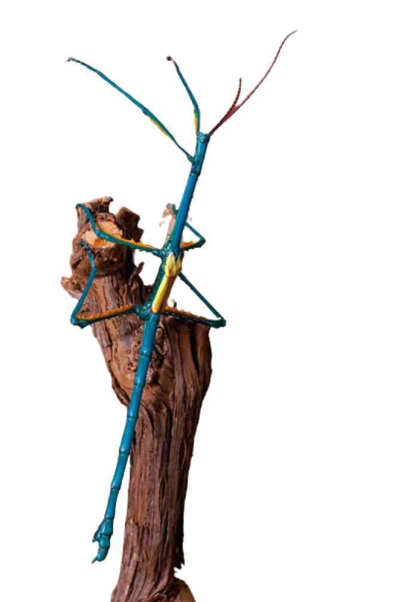

Необычный вид палочников с яркой окраской, обитающий на Мадагаскаре.

Ареал
Эндемик
Животное или растение,
обитающее в пределах
ограниченного
пространства и
присущее только какой-
либо одной территории.
Появление эндемиков, как
правило, обусловлено
географической
изоляцией.